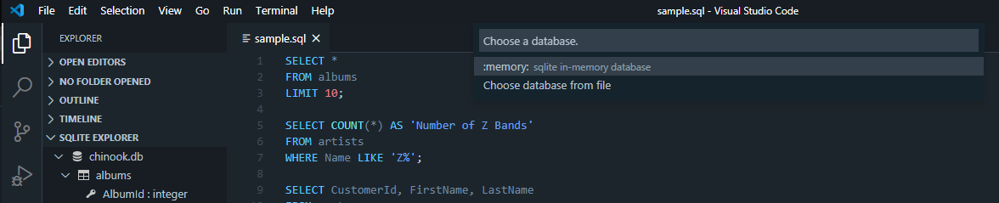

This post is the second in a two-part series on setting up and using SQLite at home (read Part 1 here). I was inspired to address this topic due to the number of posts on the Codecademy Forums regarding using SQLite locally on their own computers. Although I feel Codecademy is a great way to get started learning a new programming language, one of their weak points has always been transitioning their learners to coding offline. Hopefully these posts will serve as a definitive reference for getting beginners set up to explore and interact with SQLite databases on their own computers.
In my previous post, Part 1: CLI, I covered installing SQLite and setting it up for use on the command line. However, as I mentioned in that post, the command line is only one of the four ways I tend to interact with SQLite on my own computer — and it is the option I am least likely to go for if I need to take a close look at a dataset. In fact, I really only use the SQLite CLI if I am creating a database/table or if I am using it in a program or app. If my task involves data exploration to any degree, I find the CLI less efficient and frankly, less visually appealing. In this post I'll dive into the other three methods I use to interact with SQLite locally and why I believe they are more intuitive to use, easier on the eyes and provide better workflow integration than the command line.
To skip directly to a specific section click the link below:
- Command Line (previous article)
- Python/Jupyter Notebooks
- Visual Studio Code
- DB Browser
2. Python/Pandas/Jupyter Notebooks: The data science workflow¶

Jupyter Notebooks are practically synonymous with data science, and for good reason — they make it simple to run small chunks of code in any order and see the results in-line. This makes Jupyter Notebooks perfect for exploratory data analysis in Python, but many people don't realize Notebooks provide an excellent interface for querying a SQL database as well. The key reason is Jupyter's default HTML rendering of Pandas DataFrames. By returning your SQL query result as a DataFrame, you get all the information in a clean, readable format without ever having to leave your Python environment.
This is my preferred method of exploring a SQLite database when I need to use the data as part of a larger Python data analysis project. It fits seamlessly into the rest of my project's workflow, and allows me to concentrate on the task at hand instead of having to jump back and forth between multiple windows.
Using SQLite with Python/Jupyter Notebooks¶
If you don't have Jupyter installed yet, download Anaconda or follow the installation instructions on the Jupyter website. I highly recommend installing via Anaconda, as it comes with jupyter, sqlite3 and pandas by default.
Once you have a new Jupyter Notebook open, you can start using SQLite with Python by importing sqlite3 and pandas in the first cell of your notebook.
import sqlite3
import pandas as pd
Technically, you can use SQLite in your notebook without Pandas, thanks to Python's standard sqlite3 module. If you wanted to do so, you might start with the code below, which does the following:
- Creates a connection to the database (as in my last article, I am using the database found here for demonstration purposes)
- Creates a cursor;
- Executes a query to find the tables in our database; and
- Prints the names of those tables
conn = sqlite3.connect('chinook.db')
c = conn.cursor()
# Note: I prefer using multi-line strings for query readability; compare with the string below:
# 'SELECT name FROM sqlite_master WHERE type in ("table","view") AND name NOT LIKE "sqlite_%" ORDER BY 1;'
c.execute('''SELECT name
FROM sqlite_master
WHERE type IN ("table","view") AND name NOT LIKE "sqlite_%"
ORDER BY 1;''')
print(c.fetchall())
In the printed output we are able to see all the table names, but the result isn't very visually appealing. While you might be able to overlook it for this query, what if you want to check out the schema for all of your tables?
The cell below shows the normal Python output of a query for the schema of all the tables in our database. As you can see, it is not only ugly, it is fairly difficult to read.
c.execute('''SELECT sql
FROM sqlite_master
ORDER BY tbl_name, type DESC, name;''')
print(c.fetchall())
Of course, we can always use PRAGMA functions to check out the table info. This option (using the code below) is significantly easier to read, but it's still no better than using the CLI.
meta = c.execute("PRAGMA table_info('albums')")
for r in meta:
print(r)
This is where Pandas comes in to save the day. Because Pandas comes with a .read_sql() method, we can quickly whip up a function that runs a SQL query on our database and returns the result as a Pandas Dataframe.
# conn = sqlite3.connect('chinook.db')
def run_query(query):
try:
df = pd.read_sql(query, conn)
except Exception as e:
print(e.message)
return df
If we run our table name query again using Pandas, we have a slick-looking table with all the table names in a single column rather than in a list of tuples.
table_names = run_query('''SELECT name
FROM sqlite_master
WHERE type IN ("table","view") AND name NOT LIKE "sqlite_%"
ORDER BY 1;''')
table_names
What about our query for all the table schemas? Unfortunately this weakness still plagues us, even when enlisting the help of Pandas.
run_query('''SELECT sql
FROM sqlite_master
ORDER BY tbl_name, type DESC, name;''')
What we can do, however, is quickly create a dictionary containing DataFrames of each table's schema — which is the next best thing.
schema = {}
for table in table_names['name']:
schema[table] = run_query('PRAGMA table_info({})'.format(table))
Once our schema dictionary is created, we can examine the table info for any table in our database with ease:
schema['tracks']
One aspect I really enjoy about interacting with SQLite in this fashion is the ability to assign both queries and their results to variables for later use. By leveraging this, my code feels like Python from beginning to end rather than a disjointed Python/SQL hybrid.
For example, let's say I want to create a DataFrame of all the tracks whose names begin with the letter "a". I can save my query as a string, a_tracks_query, and also save the resulting DataFrame as its own variable, a_tracks.
a_tracks_query = '''SELECT *
FROM tracks
WHERE Name LIKE "a%"
ORDER BY Name;'''
a_tracks = run_query(a_tracks_query)
a_tracks
Later on, I may change my mind and want a_tracks to only contain the names:
a_tracks = a_tracks[['Name']]
a_tracks.head(10)
After altering a_tracks, I realize that I still need the rest of the info for those tracks for later analysis. Rather than going back and changing my code or rewriting the query I can simply call my run_query function, passing in a_tracks_query as my parameter, and assign it to a new variable.
a_tracks_info = run_query(a_tracks_query)
a_tracks_info.head(10)
Although this is a very basic example, it is easy to see how querying a SQLite database in this way can add flexibility and cohesion to your Python project.
For a more complete illustration feel free to check out this visualization notebook I made back when I was working through Codecademy's Data Visualization course. In it, I chose to combine the SQL and visualization portions of the project into a single Jupyter Notebook using the exact techniques discussed here. The database used for that project contained sample data from the Twitch data science team, consisting of roughly 60,000 rows of data.
3. Visual Studio Code: The perfect middle ground?¶

Despite the usefulness of Jupyter for exploring SQLite databases, more often than not my projects don't require both Python and SQL. As such, my go-to method for exploring SQLite databases is actually through none other than Visual Studio Code.
I already use VS Code as my primary code editor, in large part because of the sheer number of quality extensions that are available for it. One of the extensions that I use regularly is the SQLite extension by alexcvzz, which provides what I find to be an excellent and intuitive SQLite interface.
Another benefit of using VS Code is that your SQL queries and output will match your chosen color theme. In this regard, VS Code provides the most customizable experience that I've found for local SQLite usage.

Using SQLite with VS Code¶
To get started, first make sure VS Code is installed on your computer. Once it is, open it up and go to the Extensions sidebar. On Windows, the keyboard shortcut for this is Ctrl + Shift + X.
In the extensions search field, type sqlite and you will see the results containing VS Code extensions for SQLite. It should look something like this:

From here, simply click Install on the extension called SQLite by axexcvzz. You can always add a different extension later, but SQLite is more than enough for my needs and is very easy to use.
With the SQLite extension installed, you can start using it by opening the Command Palette (View > Command Palette or Ctrl + Shift + P on Windows) and typing sqlite. From here you can see all of the available SQLite actions:

Let's say you want to open up the chinook.db database and query it. To do this, click on Open Database in the Command Palette and select the database file. This will add a new collapsible section to your Explorer sidebar called SQLite Explorer, where you can click through to see the schema of your database and tables. If you want to look through a table's contents, just click on the play button icon to the right of the table name to view the entire table. This is the equivalent of querying SELECT * FROM table_name;:

If you want to type your own queries, there are a couple of ways you can go about it. One way is to click the New Query button to the right of the database name. This will open up a new file where you can type as many queries as you like, and VS Code will automatically know that you are querying that database. In this example, we just have the one database open: chinook.db.
To run all queries in the file, open the Command Palette and select SQLite: Run Query (Ctrl + Shift + Q on Windows). Alternatively, if you only want to run a particular query from your file, you can highlight it and select SQLite: Run Selected Query from the Command Palette.

You can also create a new .sql file, or open an existing one, and query from that file. However, if you do this VS Code will not automatically assume that you are trying to query from the database you have opened in the SQLite Explorer sidebar. When you go to run your query for the first time, you will be prompted to choose either the in-memory database or to choose a database file:

Once you have selected the database file (in this example chinook.db), queries are run exactly the same as if you were using the file generated by the New Query button.

As you can see, VS Code can be a powerful and flexible tool for exploring SQLite databases once it is set up correctly. Although I didn't cover them here, there are even more features of the SQLite extension, including exporting your query results as HTML, JSON or CSV. I highly encourage anyone who is interested to give it a try and see whether it fits into your arsenal of SQL exploration tools.
4. DB Browser for SQLite: The powerful and beginner-freindly GUI¶

Finally, we come to DB Browser for SQLite. Of the four methods I've discussed thus far, this is the one with which I have the least experience. Until recently I didn't even consider using a GUI app for SQLite. However, after hearing a lot of good things about it I finally downloaded DB Browser for SQLite (DB4S) and took it for a spin. Much to my surprise, I discovered a tool that was both powerful and easy to use. In fact, I would go so far as to recommend it to both beginners and seasoned professionals due to the fact that the user can make it as easy or as complicated as they want. Although I don't see myself needing it for any SQLite tasks in the near future, I look forward to incorporating it into my workflow more often — particularly when I want to take a quick look through a larger database with multiple tables.
Using DB4S¶
Installing DB4S is easy. Simply head on over to the download page and follow the instructions for your operating system. If you are a Dark Mode fiend like me, consider downloading the alpha release for version 3.12.0. As of this writing, it is the only version that supports a working dark theme for Windows and Mac OS (Dark Mode has been supported on Linux since version 3.11.1). If you decide to go with a version that supports Dark Mode, this can be selected in Edit > Preferences > Application style. You can also customize the font, color and size of your SQL queries under the SQL tab in Preferences, though I find the defaults look nice in both the dark and default modes.

With DB4S installed, opening a database file is as simple as clicking the Open Database button near the top of the screen and selecting the file you want to open. One of the greatest things about DB4S is that although you don't need to be familiar with SQL commands to use it, it will show you the SQL code for every command the program uses to display data to the user.
For example, just by opening chinook.db, we are presented with an interactive Database Structure menu, along with the SQL Log on the right hand side. The SQL Log shows the PRAGMA functions and SELECT statement the app called on our database to display this info. Thus, beginners get the convenience using the expandable menu, while also being exposed to the commands used under the hood.

Moving over to the Browse Data tab, we see that a few more commands get added to the SQL Log each time a table is selected from the dropdown menu. If you aren't super comfortable writing SQL queries by hand, the Database Structure and Browse Data tabs are likely where you are going to be spending most of your time. However, even for those of us who have plenty of SQL practice under our belts, the Browse Data view includes several cool features for quickly filtering the data.
For instance, clicking on any of a table's column names instantly sorts the data by that column, in ascending order (click one more time for descending order). Combine this with the Filter field under each column name and you can blaze through what might otherwise turn into complicated queries. In the screenshot below I achieved the equivalent of this query...
SELECT *
FROM tracks
WHERE
Name LIKE 'M%' AND
Composer LIKE 'C%' AND
Milliseconds > 100000 AND
GenreId LIKE '%7%'
ORDER BY Name ASC;

Point-and-click features aside, DB Browser for SQLite makes it easy to query your database manually, either by typing your queries on the fly or by opening a SQL file where you've already prepared and saved your queries. To utilize either of these options, merely navigate over to the Execute SQL tab.
Since I already had a bunch of queries saved in a file called sample.sql, I can open that file and hit the Execute button (or Ctrl + Enter, F5 or Ctrl + R on Windows). This will execute all queries in the file or whichever query I have highlighted. However, it is important to note that the output section of the app will only display the results for the most recent query that you have run.

As mentioned earlier, DB4S can become as complex as you want it to, and there are dozens of features that can't be covered in this post but are worth checking out. For example, the Plot feature (seen in the image at the top of the post) might really interest some readers. Others might be more intrigued by the ability to edit Pragmas at the touch of a button. Either way, so long as its developers stay true to the simple-yet-powerful design that it currently embodies, I'll continue to recommend DB Browser for SQLite as an excellent addition to any SQLite toolkit.